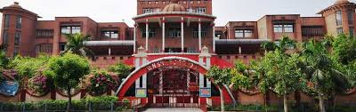

Home
Welcome to ASN School. Here we strive for excellence in education. Our mission is to provide a holistic education that nurtures the mind, body, and spirit of every student. We believe in fostering a love for learning and encouraging our students to reach their full potential. Join us in our journey towards academic excellence and personal growth.For more information about our school, please explore the sections below.
We are committed to providing a safe and nurturing environment for all our students. Our dedicated faculty and staff work tirelessly to ensure that every child receives the best education possible. We invite you to be a part of our ASN family and experience the difference. Thank you for visiting our website. We look forward to welcoming you to ASN School. For any inquiries, please feel free to contact us. We are here to assist you in any way we can.


About Us
Adarsh Shiksha Niketan, was founded by an eminent and dedicated educationist Shri K.L. Luthra in the year 1975 with a clear vision, a strong mission and a relentless drive to serve the society in the field of education. The desire to serve in a novel way led to the merger of the modern concepts with Indian culture. His boundless zeal and untiring efforts along with dedication of teachers help the School to grow in leaps and bounds from its humble beginning to its present status.
ASN Sr. Sec. School has an objective to sensitize the students and the society that exists around and acts on its motto “FAITH & FOLLOW, ACT & ACHIEVE, SERVE & SMILE” to achieve its mission. Education here is disseminated with a core objective to create culturally developed, responsible and conscientious global citizens.
Our child centric, futuristic philosophy promotes growth mindset, recognizing every child to be unique, having his own strengths and challenges, and equally important for the sustainable universal familyhood.
We strive towards creating a fine balance between academic excellence and human insight; foster inclusivity by embracing diversity, promote belonging for every student and ensure a safe, secure and nurturing environment for every student to enjoy, learn, thrive and achieve.
Learning at ASN is an active process and our learners - enquiring researchers, capable problem solvers, innovative thinkers, promising leaders, are continuously building knowledge and skills, creating meaning not only as an end in and of themselves, but developing a deeper understanding of the world outside, to make positive contribution to it.
A vital and robust interface between all stake holders bespoke our endeavours in establishing a collaborative framework of share values and goals, aligned towards a unified outcome of excellence in education and nation building.
The school has earned laurels and splendid reputation for its ideals and standard of education.